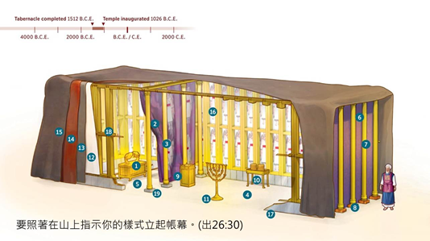
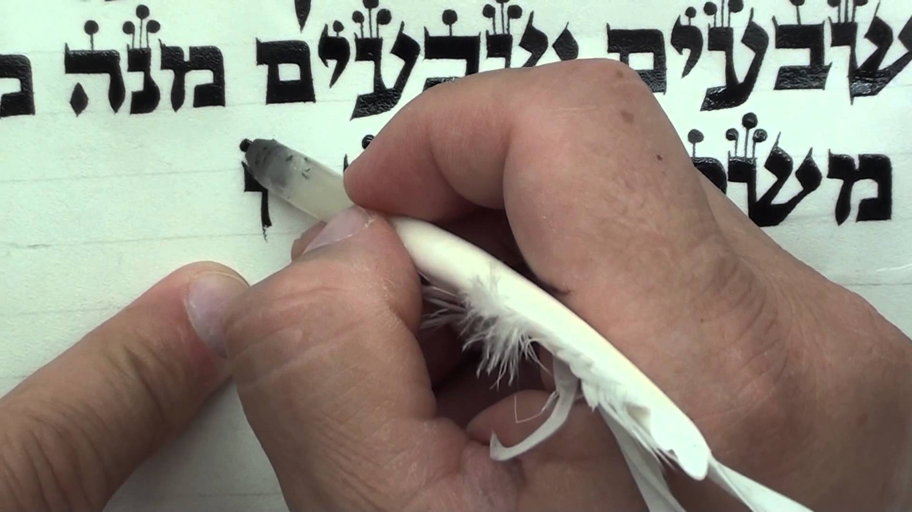
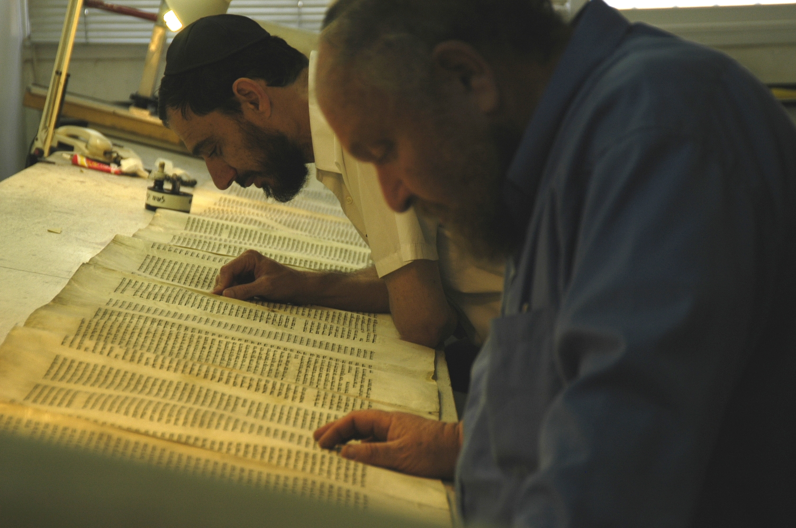

| 讀 | 默想 |
|---|---|
| 1 耶和華曉諭摩西說： 2 「正月初一日，你要立起帳幕， 3 把法櫃安放在裡面，用幔子將櫃遮掩。 4 把桌子搬進去，擺設上面的物。把燈臺搬進去，點其上的燈。5 把燒香的金壇安在法櫃前，掛上帳幕的門簾。6 把燔祭壇安在帳幕門前。7 把洗濯盆安在會幕和壇的中間，在盆裡盛水。 8 又在四圍立院帷，把院子的門簾掛上。 9 用膏油把帳幕和其中所有的都抹上，使帳幕和一切器具成聖，就都成聖。 10 又要抹燔祭壇和一切器具，使壇成聖，就都成為至聖。 11 要抹洗濯盆和盆座，使盆成聖。 |
這段經文是記錄上帝吩咐摩西要在確定的時間，就是猶太人的正月初一日，立起帳幕。並且吩咐擺設會幕物件的順序與方式。並且吩咐在物件安放好了之後，要將所有的物件抹油。使物件成聖。 「成聖」就是分別出來歸給神。「至聖 קֹדֶשׁ קֹדֶשׁ」原文是「神聖、神聖」。凡「至聖的」器皿，不但本身已經「成聖」歸給神，而且能使「凡挨著的都成為聖」（三十29）。 被膏油膏抹過的「會幕和法櫃，桌子與桌子的一切器具，燈檯和燈檯的器具，並香壇、燔祭壇，和壇的一切器具，洗濯盆和盆座」（三十26-28）都已經「成為至聖」。 |

|
|
|
12 要使亞倫和他兒子到會幕門口來，用水洗身。 13 要給亞倫穿上聖衣，又膏他，使他成聖，可以給我供祭司的職分； 14 又要使他兒子來，給他們穿上內袍。 15 怎樣膏他們的父親，也要照樣膏他們，使他們給我供祭司的職分。他們世世代代凡受膏的，就永遠當祭司的職任。」 |
物件要抹油成聖，更重要的是使用操作物件的人，要用水洗身、穿上聖袍、用油膏抹，使他成為聖。 祭司的職分要世世代代傳承，新約的門徒成為君尊的祭司，也要一代一代傳承。 帳幕和一切器皿都已經造好了，但摩西還沒有「立起帳幕」（2節），而是「祝福」（三十九43）、等候。曾經摩西沒有多等幾天，聽從了葉忒羅的建議去解決眼前的問題，結果卻導致了金牛犢的失敗，以致他重新上山，再等了「四十晝夜」（三十四28）。 現在，摩西雖然看到有「立起帳幕」的需要，就不敢搶在神的前面。神已經吩咐的，就照著山上的樣式忠心去做；神還沒有吩咐的，就安息在神安息等候。 |
|
16 摩西這樣行，都是照耶和華所吩咐他的。 （但是，這時是記錄上帝吩咐摩西如何立起帳幕，如何擺設會幕物件並且抹油，但是還沒有進行，實際進行的記錄在17節之後。） |
「正月初一日」（2節）指出埃及以後「第二年正月初一日」（17節），也就是亞筆月初一日，大約在現代陽曆三、四月間。百姓于三月初一到達西奈山（十九1），此時過了整整十個月。 |
| 神指定把亞筆月作為「正月」（十二2），代表神百姓新的開始。出埃及是一個新的開始，「立起帳幕」（2節）又是一個新的開始。神的計畫不只是讓祂的百姓總是停留在出埃及的地步，祂不但要我們脫離世界、罪惡和死亡，還要我們在地上「立起帳幕」，活出神的見證。「所以，我們應當離開基督道理的開端，竭力進到完全的地步」（來六1）。 神過去、現在和將來都是負責到底的神，祂不只是簡單地命令「你要立起帳幕」（2節），而是詳細地指示了「立起帳幕」的程序和時間。不但會幕的建造要根據神，會幕的支搭也要根據神；不但內容要根據神，時間也要根據神。而人所當做的，就是毫無保留地跟上神，既不落在神的後面，也不搶在神的前面，才能與神同工，準確地顯明神的見證。 | |
| 親愛的天父上帝，我感謝祢。祢是預備救恩的神，是拯救我們的神。祢救我們脫離罪惡的世界，進入新的開始。進入祢光明的國度。祢吩咐摩西。要立起帳幕的次序，以及立起帳幕的時間。我願意一起參與小組的建造，學習建立教會。從靈修禱告，學習聆聽祢的聲音。從陪讀聖經，學習小組的建造。感謝祢呼召我、使用我。奉耶穌基督的名禱告，阿們。 | |
|
17 第二年正月初一日，帳幕就立起來。 18 摩西立起帳幕，安上帶卯的座，立上板，穿上閂，立起柱子。 19 在帳幕以上搭罩棚，把罩棚的頂蓋蓋在其上，是照耶和華所吩咐他的。 20 又把法版放在櫃裡，把槓穿在櫃的兩旁，把施恩座安在櫃上。 21 把櫃抬進帳幕，掛上遮掩櫃的幔子，把法櫃遮掩了，是照耶和華所吩咐他的。 22 又把桌子安在會幕內，在帳幕北邊，在幔子外。 23 在桌子上將餅陳設在耶和華面前，是照耶和華所吩咐他的。 24 又把燈臺安在會幕內，在帳幕南邊，與桌子相對， 25 在耶和華面前點燈，是照耶和華所吩咐他的。 26 把金壇安在會幕內的幔子前， 27 在壇上燒了馨香料做的香，是照耶和華所吩咐他的。 28 又掛上帳幕的門簾。 29 在會幕的帳幕門前，安設燔祭壇，把燔祭和素祭獻在其上，是照耶和華所吩咐他的。 30 把洗濯盆安在會幕和壇的中間，盆中盛水，以便洗濯。31 摩西和亞倫並亞倫的兒子在這盆裡洗手洗腳。 32 他們進會幕或就近壇的時候，便都洗濯，是照耶和華所吩咐他的。 33 在帳幕和壇的四圍立了院帷，把院子的門簾掛上。這樣，摩西就完了工。 |
今天的經文記錄了立起帳幕的過程，完全遵照1-15節神的吩咐。 第二年正月初一日，表示一個重新開始。 聖靈之前在建造會幕物件的過程中，七次宣告「是照耶和華所吩咐摩西的」（就是在三十九章1、5、7、21、26、29、31節），如今在支搭會幕的過程中，也七次鄭重宣告「照耶和華所吩咐他的」（本章19、21、23、25、27、29、32節）。 摩西所做的一切，「都是照耶和華所吩咐他的」（16節），摩西始終只是一個神所使用的器皿，動機是要完全根據神的吩咐，過程也是完全根據山上的樣式，結果是分別為聖獻給神，這就是「本於祂，倚靠祂，歸於祂」（羅十一36）的事奉。 在製作會幕的物件過程中，除了上帝奇妙智慧的設計，又加上工人的巧思。 有華麗神聖的外觀，又深刻啟示了屬靈敬拜的意義。在架設拼裝會幕的過程，會不斷發現上帝的智慧，每一個細節都有上帝的安排。 |
|  | |
|  |  |
| 上圖：一位元文士正在用專用字體抄寫妥拉。一卷妥拉平均有52頁，抄寫員一邊抄，一邊讀出聲，平均每分鐘只能抄3-4個字母，每週只能抄一頁，抄一遍摩西五經需要1年時間。抄完了，還需要另外兩組人負責校對、修補字母。若有3頁出現問題，整卷就必須燒毀。文士必須遵守超過4000條猶太律法，每個筆劃什麼地方粗、什麼地方細，什麼字母必須變大、什麼字母必須變小，什麼字母必須添加單頂皇冠，什麼字母必須添加三頂皇冠，都有具體規定。因此，只有最虔誠的正統猶太人才有資格做文士，他們抄寫妥拉就像建造會幕一樣認真。 |
上圖：兩位耶路撒冷的文士正在校對妥拉經卷（Torah
Scroll）。希伯來聖經抄寫員被稱為文士（Sofer/Sofrim），意思是「字母數算者」。神揀選了一批敬虔、嚴謹的文士把摩西五經（妥拉）抄傳了3500年， 從摩西完全照耶和華所吩咐他的立起帳幕，我們也從猶太人認真抄寫摩西五經的文士，看到他們嚴謹任真的態度。 |
| 親愛的上帝，我感謝祢。祢是賜下恩典的主。祢是向人說話的神。祢對摩西說話，好像對朋友說話一樣。因此祢讓摩西在指揮支搭帳幕的時候。完全依照祢在山上啟示他的樣式。祢又在呼召工人製作會幕各樣物件的時候，有祢的啟示加上祢所賜給人的智慧與巧思。親愛的主耶穌基督，祢呼召每一個門徒，成為君尊的祭司，參與教會小組事工的建造，為了讓我們的著祢永恆同在的榮耀。祢呼召了歷代的文士，嚴謹認真抄寫摩西五經，將祢的話無誤的抄寫下來，使我們可以朗讀，而且默想屬靈的涵義。懇求聖靈使我能明白祢話語的奧秘，活用在教會建造的生活中。奉耶穌基督的名禱告，阿們。 | |